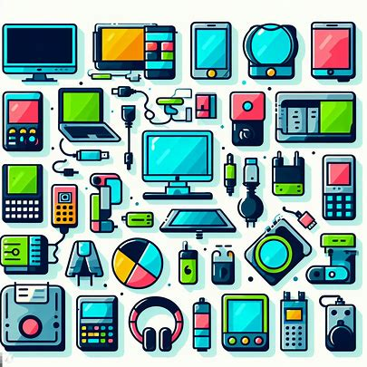

Welcome to this informative site about bay area e-waste
Welcome to our Informational Website. Look into any of the Options on the right to get more Information about waste in the bay area, or start reading below
What is E-Waste?
E-Waste, standing for electronic waste, is any electronic device that is no longer in use. Examples include smartphones, computers, speakers, appliances, and even plain wires. (US EPA 2023)
Image of E-Waste examples (Generated by Dall-E 3)
Every year, more and more e-wasts is being produced, between 2014 and 2019, the amount of e-waste produced increased by 21% (Van Yken et al. 2021). By 2030, it is projected to grow to 74 million metric tons (Van Yken et al. 2021).
Graph of current and projected e-waste trends (Statista)
What are the harms of e-waste?
e-waste can contain toxic materials such as nickel, zinc, lead, chromium, barium, and flame retardants, which can cause damage to the human body(US EPA 2023).
Periodic table with notable elements in e-waste highlighted
E-waste can also have harmful effects on the environment. According to the EPA, e-waste can cause damage to the environment by contaminating soil and water,
and can also cause damage to the ozone layer, especially if it is not disposed of correctly (US EPA 2023.)
Many devoloping countries will import e-waste, as there is a chance to make money from recovering raw materials, or even selling the devices themselves.
They often lack the infrastructure to properly dispose of the e-waste, and improper disposal methods can cause damange to communities and the enviroment.
One example of this is in Gnana. They are one of the largest importers of e-waste. One dump site where much of the e-waste is dumped is called Agbogbloshie (Electronic Graveyard).
There, the waste is stored next to a body of water, and much of it is burned to try to recover copper from the wires. This causes toxic fumes to be released into the air, and the water to be contaminated.

Image of dump site in Gnana (Electronic Graveyard)
In addition to these clear harms, not recycling e-waste also represents an oppertunity cost. Mining and creating the materials required for electronics takes substantial time and effert, and encures a substantial enviromental cost. Many components of e-waste, including rare earths, murcury, and gold are very costly to mine, and doing so causes air pollution, water pollution, and other enviromental harms (Mencho, 2022). By recycling properly e-waste, we can reduce the need to mine these materials, and reduce the enviromental impact of electronics, and allowing a more circular economy.
How is it regulated in the bay area?
Under the Electronic Waste Recycling Act of 2003, the state has implemented a funding system centred
on a fee collected at the point of sale of certain electronic products. This innovative program aims to
incentivize the proper recycling of items such as computers, televisions, and other devices with screens larger than four inches, measured diagonally (State of California).
The state’s Department of Toxic Substances Control classifies and regulates discarded electronic devices containing hazardous materials as hazardous waste
(State of California).
Consumers in California are encouraged to recycle their e-waste through certified recyclers, ensuring hazardous substances, such as lead, mercury, and
cadmium, are responsibly managed and not released into the environment. These recyclers are then compeensated by the government using funds from that tax (State of California).
This approach, being a combination of regulation and market incentives, has been very effective in reducing the amount of e-waste in landfills, and has been
led to the birth of a large e-waste recycling industry in California (Dtsc.ca.Gov).
Where does it go?
So we have established that because of regulations, a great majority of the e-waste generated in California is processed by a government certified recycler.
But what do they actually do with that waste?
The answer to this question largely depends on the recycler, but some, such as San Fransisco E-Waste, have found that sorting the trash and finding items that can be
reused is the most profitable way to recycle e-waste. They will then sell these items to other companies, or even to consumers (sanfranciscoewaste.com).
The component of the waste that is being disposed of is sorted, then sent to recycling facilities. Some parts, like plastics and the more pure metals, can be recycled traditionally.
With other components, especially the more hazerdous ones, the recycler has a couple options. They can store it safely, they can send it or sell it to a specilized facility that can
try to recover raw materials from it, or they can sell it overseas.
This last option warrents further attention, especially keeping in mind the example from Gnana earlier. California does implement some additional regulations to try to improve this situation as well though.
These are outlined in calivornia state codes §66262.50-§66262.58. These regulations ensure that the recycler has written permission from the government recieving the waste, that they will dispose of it safely (to the limited extent that this can be enforced), and that
the actual transportation process is enviromentally safe.
What can you do to dispose of your e-waste?
There are numerous servises that can pick up e-waste from your residence or buisness, as well as a plethora of drop off locations. There is also some potential to
be paid for your e-waste, depending on the recycler and type of waste.
For a map showing e-waste recycling locations near you, visit CalRecycle.
Sourses and citations
- Cleaning Up Electronic Waste (E-Waste) | US EPA
- Van Yken, J., Boxall, N. J., Cheng, K. Y., Nikoloski, A. N., Moheimani, N. R., & Kaksonen, A. H. (2021). E-Waste Recycling and Resource Recovery: A Review on Technologies, Barriers and Enablers with a Focus on Oceania. Metals, 11(8), 1313. https://doi.org/10.3390/met11081313
- Published by Ian Tiseo, ., & 6, F. (2023, February 6). Global e-waste generation outlook 2030. Statista. https://www.statista.com/statistics/1067081/generation-electronic-waste-globally-forecast/
- Electronic Graveyard: What is the solution to Ghana’s e-waste dilemma?. Gala. https://www.learngala.com/cases/ewaste-in-ghana/2
- Mencho, B. B. (2022). Assessing the effects of gold mining on environment: A case study of Shekiso district, Guji zone, Ethiopia. Heliyon, 8(12), e11882. https://doi.org/10.1016/j.heliyon.2022.e11882
- California, State of. “Electronic Waste Recycling Statutes”. CalRecycle Home Page, https://calrecycle.ca.gov/electronics/statutes/.
- Dtsc.ca.Gov. https://dtsc.ca.gov/electronic-hazardous-waste/
- “Know About the Recycling Process of E-Waste in San Francisco”. Electronic Recycling San Francisco, https://sanfranciscoewaste.com/recycling-process/.
- Cal. Code Regs. Tit. 22, § 66262.52 - General Requirements. Legal Information Institute; Legal Information Institute. https://www.law.cornell.edu/regulations/california/22-CCR-66262.52
- California, S. of. Where Do I Recycle E-Waste?. https://www2.calrecycle.ca.gov/Electronics/eRecycle/